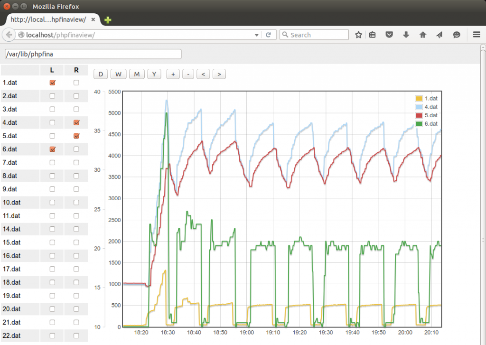
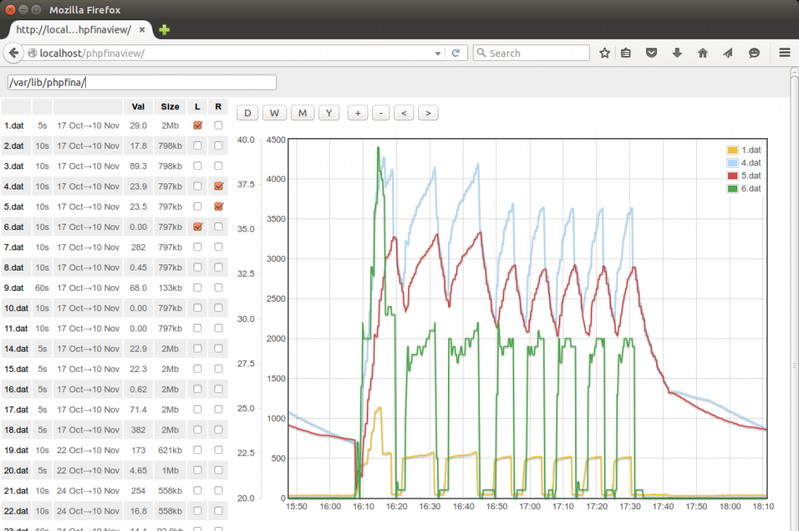

Over the years I have amassed quite a bit of emoncms data that I have archived or stored in backups but have not always maintained the link to a emoncms installation/account to view the data. I wanted a quick way of searching a phpfina directory and viewing the data files 'directly' and so I have put together a minimal data viewer for PHPFina feeds (default feed engine used on the low write image).
At the moment you can just drop this into a basic apache2+php server installation on the computer on which you store and wish to view your backup or archived data and then navigate to the directory in which your storing the phpfina data.
The interface provides a phpfina data file list and then a multigraph style interface for viewing the data, this is what it looks like:

phpfinaview can be downloaded from here: https://github.com/TrystanLea/phpfinaview
To install on a linux machine:
sudo apt-get install apache2 php5 libapache2-mod-php5 php5-json cd /var/www/ git clone https://github.com/trystanlea/phpfinaview
it should also work on a windows WAMP or mac MAMP server too.
Re: Minimal PHPFina data file viewer
This is really useful - thanks.
I asked in general discussion about which feed engine to use for different feeds as the setup instructions are unclear. Could you provide some feedback?
Re: Minimal PHPFina data file viewer
Thanks Brian, Personally I use PHPFina now for all my feeds, its the default one on the low-write image, It doesnt have the nice averaging feature of phpfiwa but for most of my needs I dont find I really need that.
I've just added a couple of fields to phpfinaview to help with identification: feed interval, start and end time, last value and size.

Re: Minimal PHPFina data file viewer
Hi Trystan,
Thanks. The trouble is (for a new user) this is unclear in the install instructions. In the screen shots for the power feeds 3 different feed engines are used for no apparent reason. I know there has been discussion as to why different engines may be used but what is the 'right' answer :)
Does the 'my electric' need certain feeds?
Cheers. Brian
Re: Minimal PHPFina data file viewer
This is extremely useful!
Will it be expanded to phpfiwa and others?
Re: Minimal PHPFina data file viewer
Hello Beire, not planning on doing so yet, focus is on phpfina for the time being. Will update here if I do extend it.
Re: Minimal PHPFina data file viewer
TrystanLea, I was trying it... but there's no phpfina in this path. I also tried to modify the path into php files, but nothing happened. Could you give me an idea what could be wrong? Thanx.